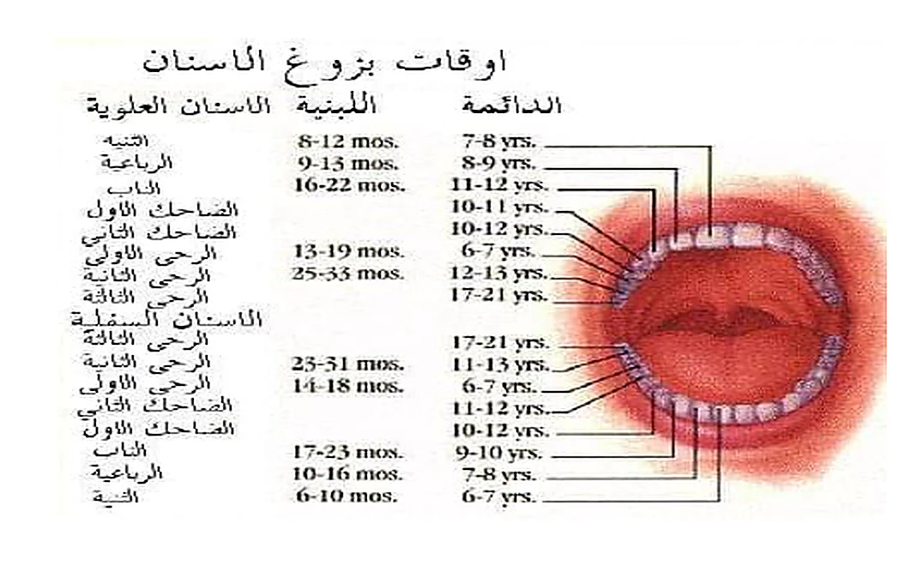

يبزغ في الفم مجموعتان من الأسنان، تتناسب كل واحدة منهما مع المتطلبات الوظيفية للإنسان في مرحلتها العمرية.
تبدأ الأسنان المؤقتة عادةً بالظهور قرب الشهر السادس، ثم تبدأ الأسنان الدائمة بالظهور قرب السنة السادسة.
20 سناً مؤقتاًعشرة في كل فك، وخمسة في كل جانب.
32 سناً دائماًستة عشر في كل فك، وثمانية في كل جانب.
تفاوت طبيعيقد يتقدم أو يتأخر البزوغ عدة أشهر بين الأطفال.
تتابع المجموعتين السنيتين
من الأسنان المؤقتة إلى الدائمة
06
20
الأسنان المؤقتة أو اللبنية
تبدأ بالظهور نحو الشهر السادس، وتستمر عادةً حتى مرحلة تبدل الأسنان. يوجد في كل فك عشر أسنان، وفي كل جانب خمسة.
ثنية
رباعية
ناب
رحى أولى
رحى ثانية
6 سنوات تقريباً
32
الأسنان الدائمة
تبدأ بالظهور قرب السنة السادسة من العمر، وتضم في كل فك ست عشرة سناً وفي كل جانب ثمانية أسنان.
ثنية
رباعية
ناب
ضاحكان
ثلاث أرحاء
i
بقاء السن المؤقتة
قد تبقى السن المؤقتة مدة أطول إذا فُقدت السن الدائمة البديلة أو لم تبزغ لأسباب مختلفة.
الصورة الأصلية المرفقة
مخطط أوقات بزوغ الأسنان
اضغط على الصورة للتكبير

المخطط الوارد في الصفحة الأصليةيعرض ترتيباً عاماً لمواعيد بزوغ الأسنان اللبنية والدائمة في الفكين العلوي والسفلي.
الأسنان المؤقتة
مواعيد البزوغ والسقوط
20
الفك العلويالأسنان اللبنية
السن
موعد البزوغ
موعد السقوط
الثنايا
6–8 أشهر
6–7 سنوات
الرباعيات
9–13 شهراً
7–8 سنوات
الأنياب
16–22 شهراً
10–12 سنة
الأرحاء الأولى
13–19 شهراً
9–11 سنة
الأرحاء الثانية
25–33 شهراً
10–12 سنة
الفك السفليالأسنان اللبنية
السن
موعد البزوغ
موعد السقوط
الثنايا
6–10 أشهر
6–7 سنوات
الرباعيات
10–16 شهراً
7–8 سنوات
الأنياب
17–23 شهراً
9–12 سنة
الأرحاء الأولى
14–18 شهراً
9–11 سنة
الأرحاء الثانية
23–31 شهراً
10–12 سنة
±
يختلف توقيت بزوغ الأسنان اللبنية والدائمة إلى درجة كبيرة، ويُعد تقدم أو تأخر البزوغ نحو ستة أشهر عن الوقت المعتاد أمراً طبيعياً لدى طفل معين.
حفظ المسافة والإطباق
أهمية المحافظة على الأسنان اللبنية
تعد المحافظة على الأسنان اللبنية حتى سقوطها الطبيعي أمراً ضرورياً؛ فهي تحفظ المكان المخصص للسن الدائمة التي ستخلفها.
قد يؤدي قلع السن المؤقتة مبكراً إلى انشغال المسافة المخصصة للسن الدائمة وحدوث اضطراب في الإطباق يستدعي التقويم.
بزوغ الأسنان عملية فيزيولوجية طبيعية، ولا يثبت النص دوراً مباشراً للبزوغ في الاضطرابات العامة السابقة.
قد تتزامن هذه الأعراض مع مرحلة يضع فيها الطفل أشياء مختلفة في فمه لتخفيف الانزعاج، مما قد ينقل الجراثيم ويؤدي إلى اضطرابات هضمية؛ لذلك قد تكون الأعراض العامة مصادفة زمنية.
01
التهاب اللثة المؤقت
قد يرافق البزوغ ألم عابر يزول خلال أيام قليلة، ولا يُنصح باستئصال النسيج المغطي للسن إلا عند الضرورة.
02
التخفيف الموضعي
يذكر المصدر إمكان استخدام مخدر موضعي غير مخرش عدة مرات يومياً، قبل الطعام وقبل النوم، وفق توجيه مهني مناسب.
03
حلقة التسنين الباردة
يمكن تقديم حلقة تسنين باردة بالثلاجة لتخفيف الانزعاج، مع تجنب تشجيع الطفل على مص الإصبع.
ملاحظة سلامة:هذه الصفحة تنظّم محتوى المصدر التعليمي ولا تستبدل تقييم طبيب الأطفال أو طبيب الأسنان، ولا سيما عند الحمى أو القيء أو الإسهال أو استمرار الألم.
الأسنان الدائمة
العدد والترتيب ومواعيد البزوغ
32
الثنيةالرباعيةالنابالضاحك الأولالضاحك الثانيالرحى الأولىالرحى الثانيةالرحى الثالثة (ضرس العقل)
السن
الأسنان العلوية
الأسنان السفلية
موعد البزوغ
التسلسل
موعد البزوغ
التسلسل
الثنية
7–8 سنوات
أمامية
6–7 سنوات
أمامية
الرباعية
8–9 سنوات
أمامية
7–8 سنوات
أمامية
الناب
11–12 سنة
نابية
9–10 سنوات
نابية
الضاحك الأول
10–11 سنة
خلفية
10–12 سنة
خلفية
الضاحك الثاني
10–12 سنة
خلفية
11–12 سنة
خلفية
الرحى الأولى
6–7 سنوات
خلفية
6–7 سنوات
خلفية
الرحى الثانية
12–13 سنة
خلفية
11–13 سنة
خلفية
الرحى الثالثة
17–21 سنة
ضرس العقل
17–21 سنة
ضرس العقل
الاضطرابات التطورية
شذوذات عدد الأسنان وشكلها وبنيتها
!
01
شذوذات عدد الأسنان
الأسنان الزائدة
يُعتقد أنها تنتج عن انحرافات في المرحلة الأولية لدورة حياة السن، مع احتمال وجود ميل وراثي. ترد بنسبة 1–9% في الأسنان الدائمة، وتكون أقل شيوعاً في الأسنان المؤقتة وأكثر انتشاراً لدى الذكور.
يمكن أن تظهر في أي موضع، وأكثرها مصادفة السن الأنسيّة بين الثنايا العلوية، وتكون غالباً صغيرة مخروطية ذات جذر قصير، وقد تكون مفردة أو مزدوجة.
قد تؤخر بزوغ الأسنان الخلفية أو تمنعه أو تغير مسار البزوغ؛ لذلك يفيد الكشف المبكر وقلعها بعد بزوغها، أو قبل ذلك عند وجود اختلاط.
غياب الأسنان
يكون عادةً وراثياً، وقد يكون غياباً كاملاً أو جزئياً.
02
شذوذات شكل الأسنان
قد تنجم عن آفات مرضية أو أسباب وراثية أو رضوض تصيب المنطقة.